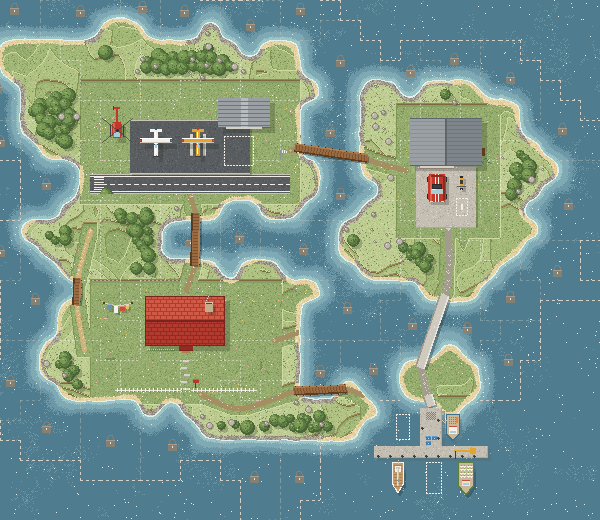

我的小島・畫面
登島之後的三個畫面草圖（手機 375 寬）
島的圖是「參」那座；價錢、數字都還沒定
一登島：看全島
島 參12 塊地・藏品 8 件・再買 2 塊升 肆

點兩下放大・點設施看看- 上面
- 回會員中心、標題、錢包（跟其他頁同一個錢包）；下一行島的等級（朱色小章）、幾塊地、藏品幾件、再買幾塊升下一階
- 中間
- 整座島縮小放進畫面（太大的島上下留海、可以拖）；還沒買的地是虛線＋鎖
- 下面
- 四顆：商店（地、設施、載具、家具、衣服）、倉庫（買了還沒擺的、寄放處的車船）、扭蛋（藏品）、圖鑑（收集了幾成）
二點兩下：放大
島 參12 塊地・藏品 8 件・再買 2 塊升 肆
－
紅瓦平房參
2 間房・衣櫃 1・曬衣繩晾 4 件
進屋升級：兩層洋房 $?
- 放大
- 點兩下放大兩倍（再點兩下或按「－」縮回去），一根手指拖著看；右上角小地圖，紅框是現在看的地方
- 點設施
- 白色虛線框起來，下面跳一張小卡：名字、等級、裡面有什麼；「進屋」（家）／「換車」（車庫）／「看船」（碼頭）…，和「升級」（寫下一階的名字和價錢）
- 會動
- 之後再加：車開來開去、飛機起降、火箭發射
三點沒買的地：買地
島 參12 塊地・藏品 8 件・再買 2 塊升 肆
這一塊
買這塊地
9 格・跟陸地相鄰・會填海接起來
$? 價錢之後定；越後面買的地越貴
再買 2 塊，島升到 肆：可以蓋家、車庫、碼頭的伍，停機坪的肆
先不要買下來
- 點鎖
- 那一塊地亮起來、標「這一塊」，下面滑出買地的卡片：幾格、相鄰才能買（不相鄰的寫「先買旁邊那塊」）、價錢、買了離升級還差幾塊、升級會解鎖什麼
- 買下來
- 海岸線長出去（之後做個填海的小動畫），升級的話跳一張「島升到 肆」的卡片
- 特殊地塊
- 第一版先不做（想法留著）